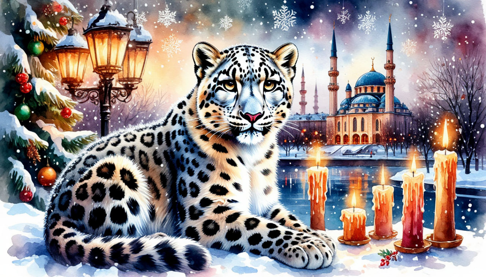

Новый Год в Казани

Даты тура: с 30 декабря 2025 года (вт) по 3 января 2026 года (сб)
Стоимость тура:
- 23 300 р. - взрослый
- 23 200 р. - пенсионеры/школьники
- 30 100 р./чел - одноместное размещение
По программе:
- - Обзорная экскурсия по Казани
- - Экскурсия по территории Кремля
- - Экскурсия в мечеть Куль Шариф
- - Экскурсия в Национальный музей
- - Экскурсия в Раифский монастырь
- - Вечерняя экскурсия Новогодняя Казань
- - Арыш Мае с дегустацией
Программа тура:
1 день:
- 18-00- выезд из Костромы от ТРЦ "РИО" (Ул. Магистральная, 20), правый угол от центрального входа
2 день:
- Прибытие в Казань
- Завтрак в кафе города.
- Обзорная экскурсия по городу «Новогодние краски Казани». В ярком новогоднем украшении и морозном запахе хвои, древний город предстанет в самом его сказочном воплощении!
- Экскурсия проходит по известным местам Казани: Старо-Татарская слобода, мечеть Марджани, озеро Кабан, татарская деревня Туган Авылым, площадь Свободы, Казанский университет, набережная НКЦ Казань, где открывается незабываемый вид на другую сторону города и казанскую Ривьеру, посещение места обретения Казанской иконы Божьей Матери — Богородицкого монастыря , в котором и хранится один из старейших списков этой иконы.
- Зимняя панорама города от Национального Культурного Центра города.
- Экскурсия «Белокаменная крепость». Казанский Кремль – главная достопримечательность города, памятник всемирного наследия ЮНЕСКО.
- Экскурсия в мечеть Куль Шариф. Во время экскурсии мы войдём в здание мечети, поднимемся к самому куполу и насладимся красотой её художественной архитектурой!
- Пешеходная экскурсия «Казанский Арбат». Побывать в Казани и не совершить экскурсию по Баумана – древнейшей улице города – значит не увидеть самого главного. Одно из старейших названий этой улицы – Большая Проломная.
- Обед в кафе
- Размещение в отеле.
- Свободное время.
3 день:
- Поздний завтрак в отеле «шведский стол»
- Свободное время. Вы сможете прогуляться по городу, посетить фестивальные площадки, насладится праздничной атмосферой.
- 16-00 (Ориентировочно) Поздний выезд на экскурсию.
- Дегустация в «Арыш Мае»
- «Арыш Мае» — это магазин-музей, в котором Вы узнаете о том, как производятся спиртные напитки, какова история их создания, на какую потребительскую аудиторию они рассчитаны, и, конечно же, о культуре их потребления.
- На полках музея Вы увидите гастрономические бренды Татарстана: вяленый гусь, копченые утки, казылык (колбаса из конины), кумыс и, конечно же, чак-чак и талкыш калеве (татарский десерт).
- У Вас будет возможность:
- - познакомиться с богатством ассортимента;
- - получить интересную информацию по истории производства алкогольных напитков и традициях татарского гостеприимства;
- - продегустировать лучшие образцы вина, водок, бальзамов и фирменных горьких настоек;
- - выбрать подарки и сувениры для друзей и близких;
- - приобрести национальные мясные деликатесы, восточные сладости и другие сопутствующие товары.
- Детям во время дегустации будут предложены вкусные напитки и сладости!
- Вечерняя экскурсия «Новогодняя Казань».
- Словно по взмаху волшебной палочки зажигаются огни города и начинается сказка. В свете праздничной иллюминации Казань становится еще прекраснее.
- Хотите увидеть это собственными глазами?
- Вы узнаете об истории новогодних праздников, сколько в мире дедов Морозов, и конечно, что такое Новый год по-татарски!
- Вы увидите:
- – центр семьи "Казан" на набережной реки Казанки;
- – главную ёлку столицы
- И как в детстве Вы сможете загадать заветное желание под ёлочкой и оно обязательно исполнится!
- Ведь это не простая, а главная ёлка Казани!
- Вечерняя Казань прекрасна всегда!
- Возвращение в отель.
4 день:
- Завтрак в отеле «шведский стол»
- Выезд на экскурсионную программу с вещами.
- Экскурсия в один из старейших российских музеев – Национальный музей Республики Татарстан, расположенный недалеко от Казанского Кремля в великолепном здании бывшего Гостиного двора. Эта экскурсия понравится людям всех возрастов!
- Здесь выставлена личная карета Екатерины II, пережившая войны и революции. Также во время экскурсии по музею вы увидите коллекцию старинного оружия и фарфора, предметы древнего быта и кладовую старинных монет.
- Обед в кафе города с мастер - классом .
- Приглашаем на кулинарный мастер-класс по изготовлению татарского десерта - чак-чака! Вы научитесь приготовлению этого восточного лакомства.
- Какой Новый Год без подарка! Посещение национального магазина «БЭХЕТЛЕ», где необычайно широк выбор татарской кулинарии (покупка «вкусных» сувениров и подарков домой: чак-чака, кош-теле, талкыш калеве и пр.)
- Экскурсия «Зимняя сказка в Раифе»
- В преддверии Рождества Христова Раифский монастырь окрашивается светом ярких огней. Ледовый городок открывает свои двери для прихожан и гостей!
- Переливаются на солнце величественные храмы и скульптурные композиции – чудеса, сотворённые руками мастеров! Доводилось ли Вам увидеть Казанский собор изо льда?
- Встречал ли Вас снежный Архангел Михаил?
- Вы увидите:
- - библейские персонажи и храмы, изготовленные изо льда;
- - библейские персонажи и храмы, изготовленные изо льда;
- - рождественский вертеп с подсветкой;
- - мозаичное панно с изображением чудотворного образа Грузинской иконы Божией Матери;
- - киоты для праздничных икон Рождества Христова и Крещения Господня
- На экскурсии по монастырю
- Вы увидите:
- - церковь во имя Святых преподобных Отцов в Синае и Раифе убиенных, от которой и произошло название монастыря;
- - церковь Веры, Надежды, Любови и матери их Софии;
- -озеро Раифское, "неквакующих" лягушек, великолепный сосновый лес;
- - часовню, освящённую патриархом с источником "святой воды"
- Вы посетите:
- - Собор Троицы Живоначальной (Троицкий собор);
- - Собор Грузинской иконы Божией Матери, где находится святыня монастыря - чудотворный Грузинский образ пресвятой Богородицы
- - В свободное от церковной службы время можно будет услышать пение монастырского квартета "Притча".
- После экскурсии у Вас будет возможность посетить церковные лавки, заказать требы, помолиться у святых икон, набрать воды из святого источника, а также прогуляться по берегу Раифского озера и купить Раифские сувениры.
- Выезд домой.
5 день:
Прибытие в Кострому в первой половине дня (ориентировочно)
В стоимость тура входит:
- - проживание в гостинице*
- * отель "Гагаринн" 3* (Номер реестровой записи: С162024014547)
- - питание: 3 завтрака + 2 обеда
- - услуги гида-экскурсовода
- - экскурсионная программа
- - автобусное обслуживание по программе тура
Стоимость тура не зафиксированы и могут быть изменены в большую или меньшую сторону в зависимости от уровня спроса в любой момент.
Время начала экскурсий и их порядок указано ориентировочно.
Фирма-исполнитель оставляет за собой право замены экскурсий без уменьшения общего объема экскурсионной программы.
По вопросам бронирования обращайтесь: